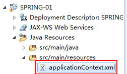
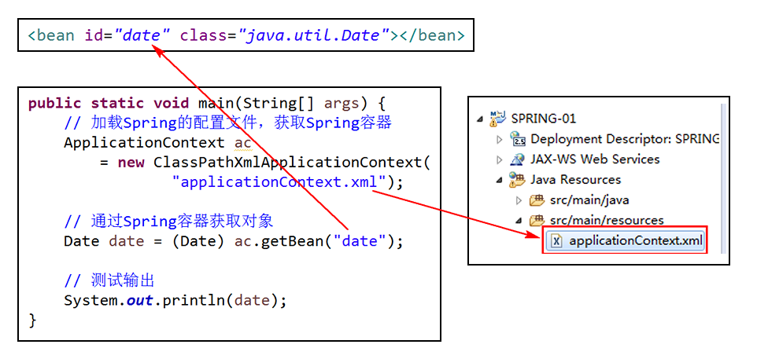
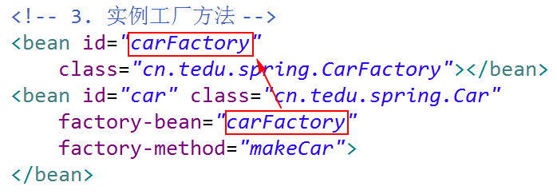
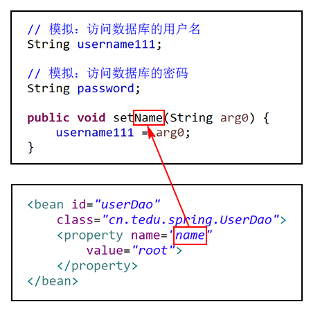

1. 框架
框架是一套已经编写好的程序结构，开发者在使用框架之后，可以在此基础之上进行开发，而不必关心偏底层的问题。
框架通常可以提高开发效率，一定程度上还解决了一些其它的问题，可能是性能的问题，或者数据安全的问题，或者程度的可维护性的问题等等。
框架具体的表现就是一系列的jar包，并且，可能改变原有的编程方式或流程。
普通的jar包，例如dom4j、mysql-connector等，只是实现了某个功能，相当于是一套工具。
2. 课程任务
Spring框架
SpringMVC框架
MyBatis框架
3. Spring框架
3.1. 作用
创建和管理对象。
传统的创建对象的方法是：Object obj = new Object();
使用Spring框架后：Object obj = 框架.getXXX();
即：开发者无需关注对象的创建过程，改由框架来创建，当需要对象时，通过框架获取即可。
传统的管理对象可能有：student.setName("张三同学");
使用Spring框架后，无需执行相关代码，通过配置，获取对象时，相关属性就已经有值了。
3.2. 项目准备
先创建Maven项目，勾选Create a simple project，Group Id为cn.tedu.spring，Artifact Id为SPRING-01，Packaging选择war，创建好项目后，默认项目是出错的，需要生成web.xml文件。
使用Spring之前，需要添加相关依赖，artifactId为spring-webmvc，且groupId是org.springframework，版本通常选择3.2或以上版本，但，目前尚不推荐使用5.x版本。
<dependency>
<groupId>org.springframework</groupId>
<artifactId>spring-webmvc</artifactId>
<version>4.3.9.RELEASE</version>
</dependency>以上代码，应该添加到项目的pom.xml的<dependencies>节点的内部。
然后，下载得到applicationContext.xml文件，复制到项目中的src\main\resources文件夹下：

3.3. 通过Spring获取对象–类中存在无参数构造方法（常用）
在Spring的配置文件（applicationContext.xml）中，添加：
<bean id="date" class="java.util.Date"></bean>以上配置中，class表示“类”，取值应该是类的全名，即包名和类名，id是自定义的名称，通常使用类名并且首字母改为小写，例如类名是Date，则id值为date，如果类名是Student，则id值为student。
完成配置后，就可以在程序中，通过Spring根据date名称获取java.util.Date的对象，可以在src\main\java中创建可执行的Java类：
package cn.tedu.spring;
public class SpringTest {
public static void main(String[] args) {
}
}然后，编写程序：
public static void main(String[] args) {
// 加载Spring的配置文件，获取Spring容器
ApplicationContext ac = new ClassPathXmlApplicationContext("applicationContext.xml");
// 通过Spring容器获取对象
Date date = (Date) ac.getBean("date");
// 测试输出
System.out.println(date);
}
自定义
User类，在Spring的配置文件中添加配置，最终，在程序中，获取User类的对象。
以上操作，要求类中存在无参数的构造方法，如果不具备条件，则：
Exception in thread "main" org.springframework.beans.factory.BeanCreationException: Error creating bean with name 'user' defined in class path resource [applicationContext.xml]: Instantiation of bean failed; nested exception is org.springframework.beans.BeanInstantiationException: Failed to instantiate [cn.tedu.spring.User]: No default constructor found; nested exception is java.lang.NoSuchMethodException: cn.tedu.spring.User.<init>()
Caused by: org.springframework.beans.BeanInstantiationException: Failed to instantiate [cn.tedu.spring.User]: No default constructor found; nested exception is java.lang.NoSuchMethodException: cn.tedu.spring.User.<init>()
Caused by: java.lang.NoSuchMethodException: cn.tedu.spring.User.<init>()这种做法对构造方法的访问权限并没有任何要求，即使是private权限，也不影响Spring创建对象！
此次实现的代码中，关于ac变量，会提示警告：ac is never closed，即：推荐调用ac.close()以释放资源，但是，ApplicationContext接口中并没有声明close()方法，所以，应该将ac的类型声明为AbstractApplicationContext。
3.4. 通过Spring获取对象–类中存在静态工厂方法（不常用）
工厂方法：调用后可以返回类的对象的方法，也可以理解为生产对象的方法。
以Calendar为例，它是一个抽象类，是不可以直接通过new 构造方法()此类语法创建对象的！但是，在这个类中，有static Calendar getInstance()方法，这个方法，就称之为Calendar类的静态工厂方法！
在Spring的配置文件中，配置：
<bean id="calendar" class="java.util.Calendar" factory-method="getInstance"></bean>以上配置中，factory-method属性的值是静态工厂方法的名称。
配置时，无论是类的全名，还是方法的名称，都必须是已知条件。
练习：自定义类HuaWeiPhone，通过静态工厂方法，获取该类的对象！
关于类：
package cn.tedu.spring;
public class HuaWeiPhone {
// 使得当前类不存在无参数的构造方法
public HuaWeiPhone(Object obj){
super();
}
// 静态工厂方法
public static HuaWeiPhone create() {
return new HuaWeiPhone(null);
}
}关于配置：
<bean id="huaWeiPhone" class="cn.tedu.spring.HuaWeiPhone" factory-method="create"></bean>3.5. 通过Spring获取对象–存在实例工厂方法（不常用）
实例工厂方法：通过某个实例（对象）调用的方法，并且，这个方法可以返回某个类的对象，是生产对象的方法。
假设存在某类需要被获取对象，不满足前序的2种条件：
public class Car {
public Car(Object obj) {
}
}则需要另一个类中存在工厂方法，可以创建它的对象
public class CarFactory {
public Car makeCar() {
return new Car(null);
}
}在配置时：
<bean id="carFactory" class="cn.tedu.spring.CarFactory"></bean>
<bean id="car" class="cn.tedu.spring.Car" factory-bean="carFactory" factory-method="makeCar"></bean>以上配置中，factory-bean的值是工厂类的<bean>节点的id属性值。

3.6. 通过Spring获取对象–小结
通过Spring创建对象，然后从Spring容器中获取对象，需要：
类中存在无参数的构造方法；
类中存在静态的工厂方法；
存在实例工厂方法。
以上3种方式中，第2种和第3种的使用频率较低，原因是满足条件的类较少。
3.7. 由Spring管理的对象的作用域
单例：单一的实例，即在同一时刻，某个类的对象是唯一的！
由Spring所管理的对象，默认都是单例的，在配置时，通过scope属性可以配置是否单例，默认取值为singleton，当取值为prototype时，是非单例的！
<bean id="student" class="cn.tedu.spring.Student" scope="prototype"></bean>单例模式可以区分为：懒汉式、饿汉式。
默认情况下，由Spring管理的单例对象是饿汉式的，通过lazy-init属性可以调整，该属性的值是布尔类型。
<bean id="student" class="cn.tedu.spring.Student" scope="singleton" lazy-init="true"></bean>3.8. 由Spring管理的对象的生命周期
仅由Spring管理的、单例的对象存在生命周期问题！
开发者可以在任何自定义的、由Spring管理的类中添加初始化方法和销毁方法，方法必须是void和无参数的，例如：
public class Stduent {
// 初始化方法
public void init() {
System.out.println("Student.init()");
}
// 销毁方法
public void destroy() {
System.out.println("Student.destroy()");
}
}然后，在Spring的配置文件中进行配置：
<bean id="student" class="cn.tedu.spring.Student" init-method="init" destroy-method="destroy"></bean>注意：对于非单例的对象而言，生命周期方法是没有意义的。
3.9. 通过SET方式注入属性的值
基本概念：通过Spring的配置，确定某个类中的某个属性的值，使得最终获取对象时，属性是已经被赋值的。
假设存在UserDao类，在类中有String username和String password表示访问数据库的用户名和密码：
public class UserDao {
// 模拟：访问数据库的用户名
String username;
// 模拟：访问数据库的密码
String password;
}需要注入值的属性，必须有set方法，即设置它的值的方法，且方法名称必须以set作为前缀：
public void setUsername(String u) {
username = u;
}然后，在Spring的配置文件中：
<bean id="userDao" class="cn.tedu.spring.UserDao">
<property name="username" value="root"></property>
</bean>即：添加子级<property>节点，在该节点，配置name和value，其中，name表示属性，value表示值。
注意：在配置

其它
1. 关于Maven中依赖出错
在添加依赖后，下载到的jar包文件可能是已损坏的，或数据不完整的，可能表现为：下载的jar包的数量不正确，或者，编写代码时，某个类无法识别等……
解决方案：
打开Eclipse的设置，找到
Maven>User Settings，面板中的Local Repository就是本地仓库文件夹；关闭Eclipse，因为已经打开的项目可能引用了本地仓库文件夹中的某个jar包，如果Eclipse正在运行，可能导致后续的删除操作无法执行；
打开本地仓库文件夹，删除出错的jar包文件（通常jar包文件对于新生来说不易于查找，所以，简单的操作方式就是将整个本地仓库文件夹全部删除）；
打开Eclipse，找到需要开发的项目，点击右键，选择
Maven>Update Project，在弹出的对话框中，选中Force update ...选项，然后，开始更新即可。
2. Resource leak
Resource leak表示“内存溢出”（内存泄露）。
模拟情景：假设存在D:/a.txt，在程序中，通过FileInputStream fis访问该文件，在访问过程中，如果出现异常，导致程序结束，然后，JVM中垃圾回收机制尝试回收垃圾时，找到了fis，但是，前序fis并没有正常关闭，仍然连接着硬盘上的a.txt文件，在JVM看来，这个fis仍处于使用状态，不是垃圾！但是，以程序员的角度来看，fis是一个变量，当程序崩溃时，这个变量就已经无法继续使用，就是个垃圾！所以，就会出现“已经无法继续使用的对象，却不会被视为垃圾数据，无法被回收！”
如果以上类似的垃圾数据越来越多，就会导致可用内存越来越少，当达到极端状态时，就会出现“内存溢出”！
所以，其实，少量的内存溢出，并没有明显的危害！但是，作为开发者，应该尽量的避免任何可能出现的内存溢出！
解决内存溢出的核心：尽早释放不再使用的资源，例如流、数据库访问的相关对象、XML的读写工具等连接型资源，对于可能抛出异常的代码，应该添加finally代码块，并在其中释放资源。
3. 单例模式示例
public class King {
private static King king;
private King() {
}
public static King getKing() {
if (king == null) {
king = new King();
}
return king;
}
}以上是懒汉式单例模式的代码，且，没有解释线程安全问题。